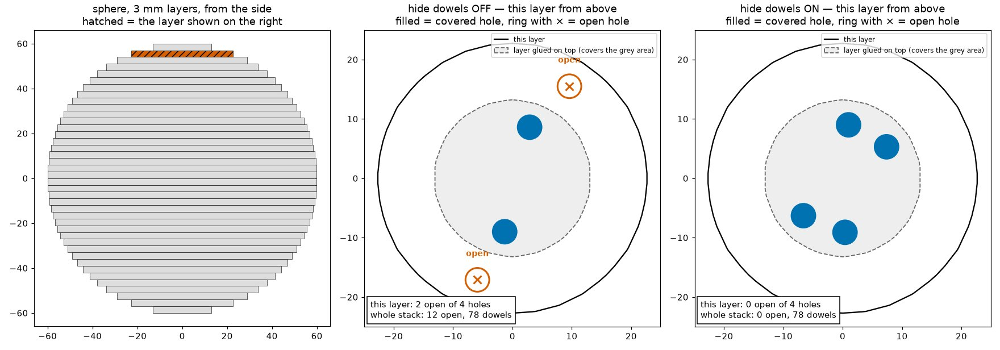
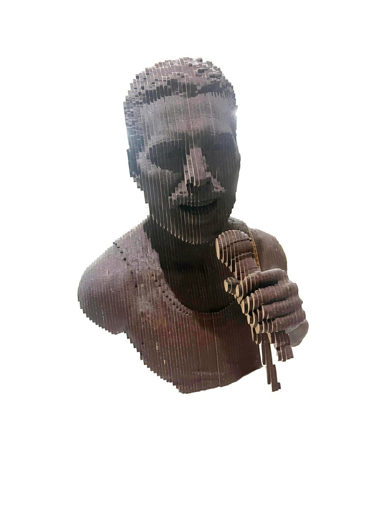

How to make a stacked slice sculpture from a 3D model
A stacked slice sculpture is a pile of flat layers. Each layer is one section of the model, cut from plywood, MDF, acrylic or cardboard. Glued, or held on dowels, the layers make the shape again. This guide uses Lamina, a free laser slicer that runs in your browser.
What you need
- A 3D model: STL, OBJ, 3MF, PLY, OFF or GLB.
- Sheets of your material, and calipers to measure their real thickness.
- A laser cutter, a CNC router for thick sheets, or a 3D printer to print the layers.
- Wood glue, or dowel rods of one size.
Steps
- Open Lamina in your browser and load the model.
- Turn the model so the layers go across the view you want people to see. Each layer is a whole section, so pick the direction where every section holds together. On the horse above, each layer is a side view. Layered up its height, the body would sit over the slanted hind legs with nothing to hold it.
- Set the size of the finished piece.
- Pick Stacked slices. Choose the axis, then the spacing or the number of slices.
- Pick the material and type the thickness you measured. More, thinner layers give a smoother shape, and more to cut.
- Choose how the layers hold together: glue face to face, dowel rods, flat pegs cut from the same sheet, spacers that keep a gap between the layers, or 3D-printed standoffs. Dowel holes can be round, square, hexagonal, cross-shaped or slots.
- Read the Checks tab. It names each part that floats or is too thin to cut, and offers a fix.
- Export the SVG or DXF and cut the sheets.
- Put the layers on the dowels in order, dry, before any glue. Then glue them.

Options that help
- Ring slices. Each layer keeps only a wall of the width you give, and the middle is cut away. The stack is a shell and uses about a quarter of the material.
- Hidden dowels (
hide_dowels). A dowel joins two layers. It goes only where the layer below them and the layer above them cover its hole, so no hole shows on the steps. The first and the last layer still show theirs. - Marks out of sight (
hide_marks, on by default). Labels, numbers and arrows go only where the layer glued on top covers them. The top layer stays clean. - The next layer's outline (
next_outline), engraved on each slice as a line to glue by. - The old 3D Slices. Set the outline to outer and sand each step down to the shape.
- Pieces that fit your sheet. A ring longer than the max piece length is cut into pieces joined by puzzle tabs.
- Light between the layers. With a gap and a small LED inside, the light comes out between the layers. The Light tab shows it before you cut.

Made with stacked slices

Charging bull on a rock
by Colin Robinson

Eagle with spread wings
by Colin Robinson

Freddie Mercury bust
by Julia

Roman statue in relief
on dowels, by Julia
More in the gallery. For slices that slot together instead, see interlocking slices.